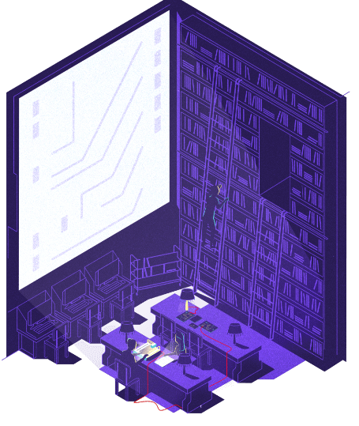
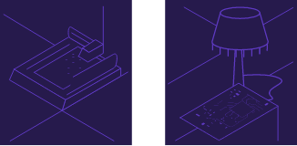

Subscribe to the podcast to receive new episodes as soon as we release them

People never stop tinkering. Hardware hacking didn’t disappear after personal computers became mainstream. But it did change. A new generation of artists, designers, and activists are banding together to change the world—with open source hardware.
Hardware hacking used to be expensive and time-consuming. Adaptable microcontrollers are making tinkering much easier. But even as the barriers to entry started falling, the practices around selling hardware have continued to veer toward secrecy. Ayah Bdeir, Alicia Gibb, and Limor Fried are working to keep hardware open. These leaders share how they helped build the open source hardware movement, and navigated fierce disagreements to make engineering accessible to all.
00:00 - Saron Yitbarek
It's September 22, 2010, the night before the first ever Open Hardware Summit taking place in New York City, and the two organizers behind the event are worried.
00:13 - Alicia Gibb
There's always that nightmare, the night before that's like, "Oh my God, what if nobody shows up?"
00:20 - Ayah Bdeir
We were like, "Yeah, this will be like in a room. We'll have you know, maybe 30 people. We'll have, you know, sandwiches."
00:27 - Saron Yitbarek
Alicia Gibb and Ayah Bdeir had only met for the first time a few months back. Ayah had gathered together a small group to a workshop called Opening Hardware. Each of the attendees were involved in their own way in a burgeoning and exciting new development, the open source hardware movement. But this early community was pretty scattered and lacked structure, and everyone had a slightly different take on what open source hardware even meant. That's when Alicia and Ayah realized they needed to take this workshop to the next level.
01:05 - Alicia Gibb
So she and I decided to join forces and take it one step further to an Open Hardware Summit, and involve a lot more people.
01:12 - Saron Yitbarek
With only a three-month window to prepare for the event, the pressure was on. But Ayah and Alicia, were excited to collaborate. And they wanted to see what could happen when a bunch of fiercely independent makers got together for the first time. But for the moment the clock was ticking away on the remaining hours left before that first summit. Then at 6 a.m. on September 23, the morning of the event, they received an email from someone at the venue.
01:49 - Saron Yitbarek
Today's open source hardware is a fascinating branch of the larger open source movement. A branch that touches the fields of design and art, as much as it does engineering. In fact, this branch is a continuation of the early days of the hobbyist computer movement. Remember the Homebrew Computer Club world in episode 3? Hardware hacking didn't disappear after personal computing went mainstream. Even as computing became a big and a proprietary business, that love for tinkering with hardware and circuitry, that love for sharing your creations with other hobbyists, it never really went away. People never stopped tinkering, and today's open hardware culture has a lot in common with those early hobbyists. But at the helm of this particular branch of the open source movement is a whole new generation of developers and thinkers. People like Alicia Gibb and Ayah Bdeir. And a little later on, I'll introduce you to a third leader of the movement, Limor Fried. I'm Saron Yitbarek, and this is Command Line Heroes, an original podcast from Red Hat.
03:09 - Saron Yitbarek
Back in the mid-2000s, the open source hardware community wasn't really much of a community. There were hackerspaces, sure. There, you could find people with a mind towards open source hardware. More and more of these spaces started to pop up all over the world, and one was located at MIT.
03:32 - Ayah Bdeir
My name is Ayah Bdeir. I am the founder of littleBits. The group was really almost like a group of misfits from the Media Lab, where it was like artists and designers and activists that came together to use technology to make an impact in the world.
03:54 - Saron Yitbarek
Ayah was part of this next generation of multidisciplinary makers, empowered by new hardware. Ayah is an engineer and interactive artist. She graduated in Beirut, with degrees in computer and communications engineering and sociology in 2004, and then from the MIT Media Lab in 2006.
04:15 - Ayah Bdeir
I negotiated with my parents that if I had a degree in engineering, I could then do design, which is what I wanted to do. That was the deal.
04:25 - Saron Yitbarek
Engineering tech was starting to make its way into non-engineering fields all over the world. In 2008, Ayah received a fellowship at Eyebeam Art and Technology Center. That's where she invented littleBits. littleBits are pre-engineered magnetic electronic bricks similar to Lego, except they contain lights, sound sensors, motors, solar panels.
04:51 - Ayah Bdeir
And so you snap a light, an LED, to a battery—a light comes on. You put a light sensor in between. Now you've made a nightlight. You put a motor and two wheels on it, now you've made the light-activated car. You can put a BLE Bluetooth module on it. Now you can activate it with your phone, so you don't have to be an engineer. It takes you seconds to do it. They snap with magnets, so they're magical, and they sound beautiful when they snap.
05:22 - Saron Yitbarek
Ayah had 2 goals: to make littleBits a company, and to make it open source. She wanted the engineering concepts to be accessible to everyone.
05:32 - Ayah Bdeir
A lot of the work that existed at random IT was around open source software. There were a few people that were really interested in how does open source apply to architecture? How does open source apply to hardware? How does open source apply to electronics? It made sense that the world is full of these incredible ideas, incredible effort.
05:51 - Ayah Bdeir
If everybody is always closing off their inventions and their IP, the world suffers. So for me, it was always interesting figuring out a way where you can be supporting yourself, and sustainable, and create strong businesses, but also be sharing knowledge.
06:15 - Saron Yitbarek
But littleBits also had to function as a business. Manufacturing, distribution, investment—each area had costs associated with them. How could she combine business objectives while at the same time making her hardware, the crux of her operation, open source? To help her figure this out, Ayah did a fellowship with Creative Commons, and used littleBits as a case study. That's when she decided to hold that workshop, Opening Hardware, back in early 2010.
06:46 - Ayah Bdeir
We did a workshop where we were like, "What are the things that are important? Should we have a definition? Should we have a place where we meet? Do we need a website? What works? What doesn't work?" And around the same time, Alicia had been doing similar work as part of being at Bug Labs, another startup that wanted to be open source.
07:08 - Alicia Gibb
I'm a big proponent to make sure that you're emotionally prepared to open source your hardware before doing it, because it kind of means that you're giving away your baby.
07:17 - Saron Yitbarek
Alicia Gibb was working at an open hardware supplier called Bug Labs, as a researcher and prototyper. She had started out as a librarian.
07:28 - Alicia Gibb
Through getting my masters in library and information science, I ended up tripping down this weird path that led me to electronics. And I found that I really loved it and really enjoyed that feeling of when you light up an LED and you understand that you're making electrons do stuff. It's a little bit like you control this tiny part of the universe and it feels really powerful, and I just love that.
07:51 - Saron Yitbarek
As different as library science and open hardware may be, for Alicia, they share the same ethos.
07:58 - Alicia Gibb
You are not a gatekeeper as a librarian. You are there to help people find the information they need. And so those roots really kind of paved the way for open source to be just obvious to me really.
08:13 - Saron Yitbarek
Companies like Alicia's employer Bug Labs, were starting to understand the business opportunities that open source hardware could offer. Smaller companies could tap into a broader group of makers, a.k.a. customers, by going open source. Larger companies could open source designs to competitors, and still profit by supplying them with related components.
08:39 - Alicia Gibb
My boss ended up asking me, "Look, there's got to be more people trying to do open source hardware than us. Do you think you can find those people and get everybody together?"
08:49 - Saron Yitbarek
The seed for the future summit was planted with that conversation. So as Alicia started searching for other open source hardware makers, Ayah received the Creative Commons fellowship, and hosted the workshop.
09:03 - Alicia Gibb
So this was the first time that I would get to meet Ayah in person. And I was pretty excited about it, because I had read her research and used it in my research when I was doing my thesis on Arduino. A lot of the people in the field I had either met or been on email lists or whatever.
09:20 - Saron Yitbarek
The people that Ayah gathered around the table at her workshop have gone on to become leaders in the open source hardware movement. Members of the Arduino team, founders of SparkFun and MakerBot, as well as one very interesting individual who named her hardware company after the world's first computer programmer.
09:49 - Limor Fried
Hello, welcome.
09:50 - Saron Yitbarek
Hello Limor, how's it going?
09:52 - Limor Fried
Hi Saron, it's good to meet you.
09:54 - Saron Yitbarek
Nice to meet you as well. I went to visit Limor Fried in downtown Manhattan. Not only was Limor part of Ayah's workshop, she and Ayah were classmates at MIT when Limor was an engineering student back in the early 2000s.
10:09 - Limor Fried
I like to take things apart. I never really had an urge to, for example, play music, right? Despite what my parents wanted me to do, which was practice violin. But what I really did like to do was play with electronics and computers and technology. Not so much put them back together. But as I got older, I learned a little bit more engineering and I would put things together, and not just take them apart. There's all these gears and motors and yeah, these are very beautiful, intricate dances of technology.
10:37 - Saron Yitbarek
At MIT, Limor learned not just how things are put together, but how to do it over and over again with consistency and precision. At the same time, something cool was happening. The advent of hardware hacking.
10:53 - Limor Fried
In the decades before, you would take individual chips and you would wire them up, and you could build stuff, but it was extremely large, expensive and time consuming.
11:03 - Limor Fried
...and then people kind of came to this idea of like, "Whoa, you can write code on a computer. Why don't we write code for electronic components?" I was starting to tinker around with electronics right at the same time when these very low-cost MAC controllers that were reprogrammable were coming into the market.
11:20 - Saron Yitbarek
The game changer was a microcontroller called the Arduino board created by an Italian guy named Massimo Banzi. He was researching new approaches to interactive design on an older device called the BASIC Stamp, but it was expensive and had a relatively weak computing power. It also wasn't MAC compatible, so Banzi and his team built a cheaper, more powerful microcontroller, which you could plug into any computer. They based the programming on a graphics language called Processing and they named their new board after King Arduin, a ruler of Italy in the 1000s. The Arduino was an inspiration for hardware hackers like Limor Fried.
12:07 - Limor Fried
Really, really powerful stuff because you can make your own products, which was something that was really not available. There's a lot of people out there who are software engineers, or who want to be software engineers, or want to be hardware engineers. And they may have a little bit of familiarity with computers' technology, but they don't realize, wow, you can actually make physical hardware. And I think for people who do a lot of typing in and like make boxes move on screens, which is a wonderful thing and I've done plenty of it myself, they're eventually like, "I'm really tired of just moving the CSS box on my screen. I want to make something that I can hold up, that can share it with other people."
12:43 - Saron Yitbarek
At the time, this concept was so new, it wasn't being covered in Limor's engineering classes at MIT. So she taught herself on the side.
12:53 - Limor Fried
I think I learned a lot from both. I'm glad I know how to take a Fourier transform, but I'm also really glad I stayed up late making a Parallel Port Pick programmer. Right? It's not something that was taught. Now it's actually in the course.
13:07 - Saron Yitbarek
So in 2005, instead of working on her thesis in her dorm room, Limor procrastinated, and she did that by tinkering. She surrounded herself with circuit boards and started making DIY MP3 players and portable video game players. Each time she finished a project, she shared the schematics online. Now get this. Her online tutorials became so popular that other makers started asking her if they could buy her custom microcontroller kits. At first, she refused. But then she realized she was onto something. So from her MIT dorm room, Limor started selling her circuit boards and schematics to other hobbyists. She was inspired by the Free Software Foundation and the Electronic Frontier Foundation.
13:58 - Limor Fried
Freedom to modify, freedom to reuse. Just like you can buy tools at a hardware store, they don't say, "Here, sign this license agreement. You can only use this hammer to put up a painting and you can't use it to build a house. You have to buy the pro hammer for that." But yet, that's kind of where we're at with software, that we're very aware that this was a future that was going to happen if we didn't give people freedom to use the software that they wrote and other people wrote together in a communal fashion.
14:26 - Saron Yitbarek
What they were doing for software, she wanted to do for hardware. She wanted to champion the kind of hardware you could make with the Arduino board, the kind of hardware you can make in your dorm room. But to push that vision forward, Limor needed to be open, needed to attract and teach other makers. And soon, there need to be protections for all that open hardware. Back to my visit with Limor.
14:56 - Limor Fried
Well, we're here in downtown Manhattan at our 50,000 square-foot facility where we do manufacturing, production, testing, programming, design, and of course, a little bit of command line as well.
15:09 - Saron Yitbarek
So yeah, it's a far cry from that tiny dorm room where she started her company in 2005. Limor's business selling kits to hobbyists has grown massively into Adafruit Industries. It's named after Ada Lovelace, an English mathematician who conceptualized the world's first computer program back in the 19th century.
15:31 - Limor Fried
We are producing and manufacturing open source hardware that has open source firmware and software inside of it. This is like an open source Willy Wonka Wonderland.
15:41 - Saron Yitbarek
It's like a Disneyland.
15:41 - Limor Fried
Yes. People say that.
15:42 - Saron Yitbarek
The Disneyland for hardware. The Adafruit factory opened in 2012. As we toured it, Limor showed me her stenciling machine, which outlines where on the board the various components will go.
15:56 - Limor Fried
So your cell phone, your laptop, any piece of electronic or GPS, little toys you're going to give away in the holidays, a lot of those contain electronics, and they're manufactured on a pick-and-place line. And what a pick-and-place line does is they pick up very small surface mount components and they place them. Thus, the name pick-and-place.
16:19 - Saron Yitbarek
The Pick operating system consists of a database, dictionary, query language, procedural language, peripheral management, multi-user management, and a compiled BASIC programming language.
16:33 - Limor Fried
Yeah. So this is a thin piece of metal, and you can see the little laser cut holes in it.
16:38 - Saron Yitbarek
Yeah.
16:39 - Limor Fried
They look quite beautiful like lace.
16:41 - Saron Yitbarek
It's really pretty.
16:42 - Limor Fried
Yeah. There, again, the pattern that you see here on a circuit board matches that lace on the stencil. So after the pick-and-places, all the components are placed down on the circuit board. They go through this oven.
16:56 - Saron Yitbarek
Okay.
16:56 - Limor Fried
Which is basically just like those bagel conveyors at the deli.
17:00 - Saron Yitbarek
It's kind of like a little city, it looks like.
17:01 - Limor Fried
Yes. This is...
17:03 - Saron Yitbarek
Limor sees the nature of hardware as historically open in general. Unlike software, hardware has always been more open to a point. Schematics were routinely included when you bought mechanical products, even electronic products, in case you had to repair them.
17:20 - Limor Fried
We didn't really have open source hardware then, but everything, you could just pop it open with a screwdriver. So in case, it was sort of self-documenting. You wouldn’t be able to fix your Apple II floppy disk drive without the schematics, so digging schematics. And nowadays, it's not true anymore. Nowadays, your hardware comes in a beautiful sleek glass rectangle. And so that's why I think we had to come up with something that allowed people to share hardware because the era of sharing hardware voluntarily was sort of ending.
17:53 - Saron Yitbarek
Limor, Ayah, Alicia and the other open hardware devotees at that Creative Commons workshop came together at a crucial time when access to how hardware was put together was drying up. If they wanted to ensure the future of an open source hardware community, one that could move beyond hobby hacking to become a sustainable movement, they would need to come together as a more focused collective with rules, definitions, and standards.
18:22 - Limor Fried
Open source communities are like precious delicate jewels. A little tick and they can just shatter. It's made of people, people. We write the code, we support it, we use it, we document it. Releasing code is a very personal thing. You're showing people, here's how I think, here's how I work, here's how my brain is organized. And if it's not a healthy place to do that, people aren't going to be free to express themselves through the code that they release.
18:51 - Saron Yitbarek
What happened next? What happened when a generation of open hardware makers left their dorm rooms and hackerspaces and met each other would lay the groundwork for a movement. It's early morning on September 23, 2010. In a few hours, Alicia Gibb and Ayah Bdeir would welcome attendees to the first ever Open Hardware Summit. They managed to create and plan a brand new event for a whole new generation of makers in 3 short months. But would they come? At 6:00 that morning, they received an email from their contact that the venue, to their surprise it said...
19:37 - Alicia Gibb
There's a line out the door already of people waiting to get in. And the event doesn't start till 9:00 or something and it was 6:00 AM and people were already there.
19:48 - Saron Yitbarek
At that inaugural summit in 2010, 320 people crowded the hall.
19:55 - Alicia Gibb
We were absolutely unaware of how big the community was. And it still floors me how international the community is. At one point, somebody wanted to send us a donation from Thailand. And so they sent us cash, a note from Thailand. And it's like wow, people in Thailand believe in us so much that they're going to send us cash through the mail.
20:16 - Ayah Bdeir
And I kind of looked around the room and I was like, "Oh, this is a moment." There is something going on in this room that is going to be a historical moment and I felt it at the time. And just the kind of support we got during and afterwards from people that wanted to sponsor, people that wanted to speak next year.
20:34 - Saron Yitbarek
Before its first year, Alicia and Ayah knew their main goal would be to develop a working definition of open hardware.
20:42 - Alicia Gibb
There were really two reasons that we needed a definition. The first was to get the community on the same page so that people weren't assuming that you can put something out there as open source hardware, but then say, "Oh, but you... There's a noncommercial clause to this." You have to be able to resell the hardware, especially because hardware takes money to mine the parts out of the ground. So there were disagreements on whether or not people needed to share their routing traces, or if just the schematic was enough, or if you needed to open the board file and things like that. "Wait, does this fit with open source hardware or not? Because we control the chip, but we don't open source the chip."
21:23 - Alicia Gibb
And then the second reason it was important is that with hardware, it's different than software where you don't instantly get copyright on it the second that you create it. So hardware is actually kind of born free until you patent it, until you decide to close it down with a monopoly. So we wanted there to be some kind of definition as more or less a tiny little legal hinge, that really it becomes a community norm, which can be held up in courts.
21:55 - Saron Yitbarek
This wasn't actually the first attempt at a standardized notion of open hardware. In 1997, a guy named Bruce Perens created an open hardware certification program. Perens was a notable open source figure because he had helped create the original open source software guidelines around the same time. Those are administered by an organization called the Open Source Initiative, OSI. But not much happened around Perens' hardware certification program in 1997, and with a new generation of makers entering the scene, it made sense to refresh the principles. At that summit, they'd get everyone to agree on a standardized definition and best practices for open source hardware. Just getting everyone together, sharing ideas and projects seemed to kickstart the community. But then discussions turned toward defining what open source hardware meant.
22:57 - Ayah Bdeir
There were the purists who believed that you couldn't call it open source hardware unless the entire toolchain was open source. Others would say, "No, that's not realistic because some of the circuit design tools or the 3D printing tools that I use are not open source, but they're accessible and there are free versions of them." Well the software at least. And so that's enough for you to replicate and modify the invention. So why does a toolchain have to be open source?
23:27 - Ayah Bdeir
Then there were conversations around attribution. In many open source software licenses, attribution is not as important. In this case, there was a lot of discussion about it because hardware is expensive. So the person who's created it has not only just put in time in a garage with a laptop, they've put in dollars, actual cash into physical things that moved from country to country oftentimes, and were made, and those things need to be recouped in some way.
23:58 - Saron Yitbarek
One of the summit's keynote speakers was Ayah Bdeir's old classmate, Limor Fried.
24:04 - Limor Fried
So one of the debates we had was, does the CAD file have to be in an open format? I remember there was a big round table and everyone kind of had their say and some people were like, no. And some people said yes. And we eventually said, "Well, let's change it to say it has to be in the original format that's like a reasonable... Like we have to come up with something." So we kind of came up with a little bit of a middle ground saying, "If you can release the files, it doesn't have to be in an openly documented format, but has to be in a format that can be read by a person with reasonable access to tools."
24:40 - Saron Yitbarek
They even brought in a few lawyers from Creative Commons to help iron things out.
24:44 - Limor Fried
And they said, "Look, if you are going to court over open source hardware, it's already over." So we said that the thing that a lot of licensees and communities have that fractures them is mismatched expectations or people not communicating their expectations. So what the definition does is, it's not really a legal framework, because there's actually no legal protection for a lot of these, but it's a framework for people to express their expectations, how they want and expect their hardware and firmware and designs to be used.
25:17 - Limor Fried
And so far that's actually worked out really well. The more people are open about what they want people to use their hardware for, the better off everybody else is, because there's no devolution of communication where people are like, "Well, you said this, but legally I can do that."
25:35 - Saron Yitbarek
The debate over what defined open source hardware continued for a year. Meanwhile, a contest was held to create a logo to go along with the definition. In 2011 at the second Open Source Hardware Summit, the intention was to ratify the definition, but this is where things hit a bit of a snag. The winning logo raised some issues because it bore a resemblance to the Open Source Initiative’s logo.
26:04 - Alicia Gibb
I was still sort of like, "Oh, everything's like rainbows and unicorns and everybody likes everybody." It was sort of a wake-up call to like, oh, even in the open source community, I guess there can be mistakes that happen and disagreements that happen and people who want to come after you legally.
26:22 - Saron Yitbarek
A compromise was eventually reached, but the experience galvanized the new movement. In 2012 Alicia, Ayah, and the team founded the Open Source Hardware Association, also known as OSHWA. At long last OSHWA had its definition.
26:41 - Alicia Gibb
So the open source hardware definition is more or less that you are agreeing to put your hardware out there as open source, making it available for people to study and learn from, to remix, to remake, to remanufacture and to resell your design and your hardware. And then you can ask for attribution on your hardware and you can ask people to follow a license that you attach to your hardware.
27:11 - Saron Yitbarek
From all those dorm rooms and garages and dining room tables, from a thousand makers around the world, a community standard was finally emerging.
27:22 - Limor Fried
No matter what license you use, people can point to and say, "If you're calling your thing open source hardware, here's the definition, here's what you're basically saying your expectations are. If that's not true, call it something else." And then on top of that, another thing that came across a few years ago was an actual, like, directory for registering open source hardware. When you go there you basically kind of check a little pledge that says, my design I'm releasing abides by this definition. So the definition kind of is the rock and this is sort of the building on top of it, so that people get a little logo and an identifier and they can say, "Yes, this is open source hardware and the Open Source Hardware Association is standing by me."
28:07 - Saron Yitbarek
This year the Open Source Hardware Summit celebrates its 10th anniversary, and these days it's even creeping into consumer products.
28:16 - Alicia Gibb
So there are an entire line of computers out there that are from System76 that are open source hardware, 3D printers like LulzBot, and there's other 3D printers that are also open source hardware. I think right now we're sort of on the cusp of more consumer products coming out.
28:35 - Saron Yitbarek
Over the last 10 years, open hardware has set a new bar for openness and diversity in tech culture.
28:43 - Alicia Gibb
One of the things that really turned me off from the open source software communities is going to a couple meetings and being asked where my boyfriend was, or who I was there with, or whatever. This assumption that, as a female, I wouldn't be there by myself. Because I could see that the open hardware community was very young and that we were just building. And so myself and Ayah were both like, "Okay, this can't happen in our community."
29:11 - Saron Yitbarek
At the first summit, there were a couple of 10-year-old makers in attendance. There were people of color in the room. The organizers were women, and the face of the open hardware movement is literally female. Limor Fried was the first woman engineer to be featured on the cover of WIRED Magazine in 2011, and according to Ayah Bdeir, the accessibility and diversity that open hardware thrives in, is something we should all care about these days.
29:43 - Ayah Bdier
When I was growing up, technology was a thing that existed. It was a discipline. You could live your life saying, "I'm not technical," and that would be fine. It's no longer the case. Technology is the foundation of everything that we do. It's how we eat, how we drink, how we communicate, how we travel, how we predict, how we publish. They affect democracy, they affect mental health, they affect social impact, they affect environmental impact. The mission is important because if we don't have creators of technology and decision makers and technology representing the demographic makeup of the world, then we are making decisions that are biased or discriminatory, that are non-inclusive and that are dangerous.
30:39 - Saron Yitbarek
Command Line Heroes is an original podcast from Red Hat. Check out our research on open source hardware at redhat.com/commandlineheroes. And while you're there, sign up for our newsletter. I'm Saron Yitbarek. Until next time, keep on coding.
Further reading
How Adafruit grew over 700% for 3 years in a row making open source hardware by Jaime Arredondo
Hackerspace Culture: An Interview with Alicia Gibb of the Blow Things Up Lab by Georgie Archibald
Drones, Chumbys, and big business: the Open Hardware Summit by John Timmer
Bonus episode
Ayah Bdeir, Alicia Gibb, and Limor Fried were early proponents of building diversity into the open source hardware community. Hear how they set the tone.
Get the newsletter
After each episode drops, we'll send you commentary from the Command Line Heroes team, as well as links that help you take a closer look at the topics we cover. It's as simple as that.
Presented by Red Hat
For 25 years, Red Hat has been bringing open source technologies to the enterprise. From the operating system to containers, we believe in building better technology together–and celebrating the unsung heroes who are remaking our world from the command line up.